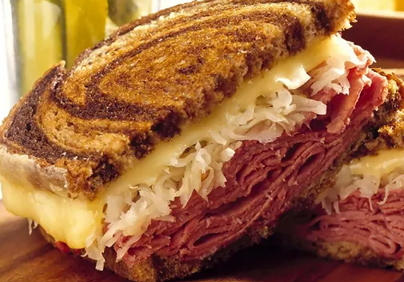

Reuben Sandwich Recipe

Description
A Reuben is a grilled sandwich featuring corned beef on rye bread.
The Reuben is a menu staple in Jewish-style delicatessens, but it's not technically kosher because it combines meat and cheese.
Ingrediants
- 8 slices rye bread
- ½ cup Thousand Island dressing
- 8 slices Swiss cheese
- 8 slices deli sliced corned beef
- 1 cup sauerkraut, drained
- 2 tablespoons butter, softened
Steps
- Gather all ingredients and preheat a large griddle or skillet over medium heat.
- Spread one side of bread slices evenly with Thousand Island dressing.
- On four bread slices, layer one slice Swiss cheese, 2 slices corned beef, 1/4 cup sauerkraut, and a second slice of Swiss cheese. Top with remaining bread slices, dressing-side down. Butter the top of each sandwich.
- Place sandwiches, butter-side down on the preheated griddle; butter the top of each sandwich with remaining butter. Grill until both sides are golden brown, about 5 minutes per side.
- Serve hot. Enjoy!